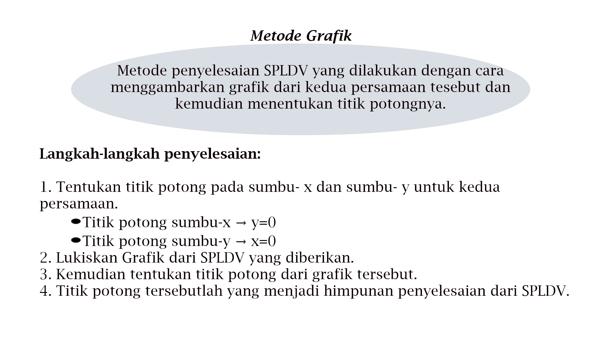

Contoh soal
Tentukan penyelesaian dari sistem persamaan linear dua variabel berikut dengan metode grafik.

Penyelesaian :
| X | Y | (X,Y) | |
|---|---|---|---|
| X | ( ) | ||
| Y | ( ) |
3x - y =6
| X | Y | (X,Y) | |
|---|---|---|---|
| X | ( ) | ||
| Y | ( ) |
Sehingga titik potong pada sumbu X dan sumbu Y pada persamaan :
| x - y = 1 | ( ) | dan | ( ) |
| 3x - y = 6 | ( ) | dan | ( ) |